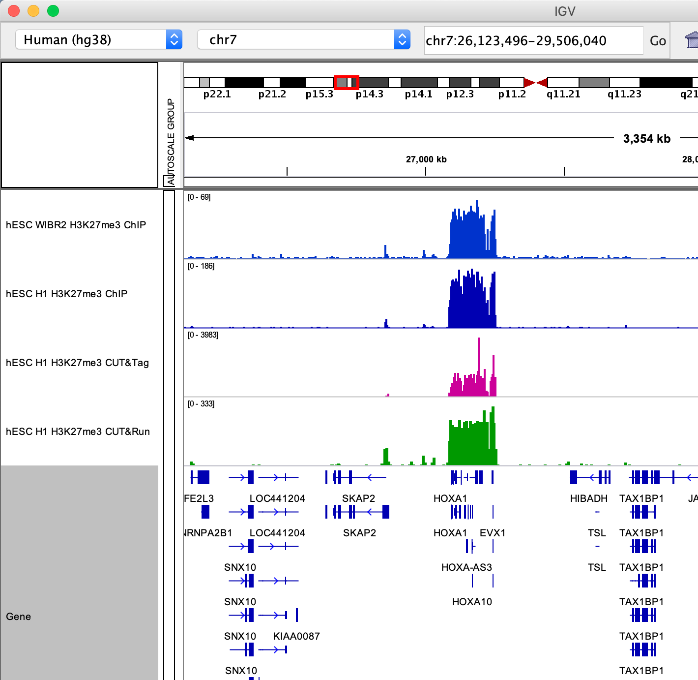
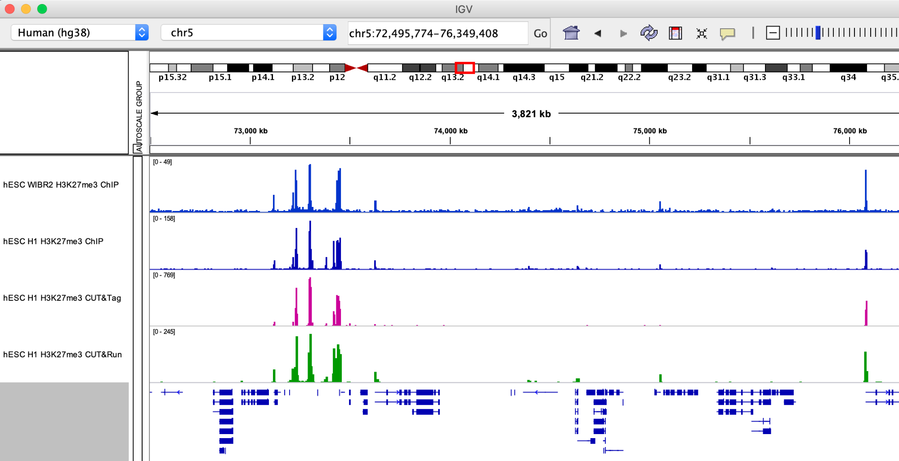
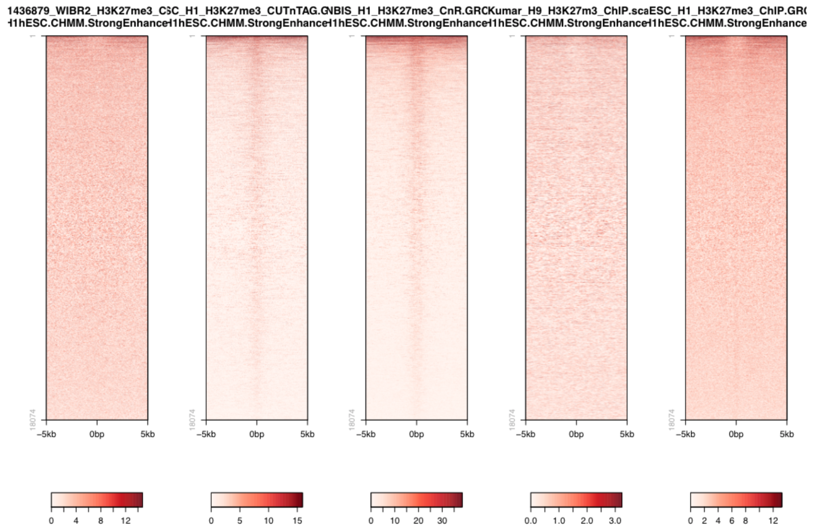

Analysis of CUT&Tag H3K27me3 dataset¶
Background¶
H3K27me3 is a histone modification associated with facultative heterochromatin, i.e. chromatin that is silenced in some but not all cell types within a body. It is written by Polycomb Repressive Complex 2. Important PRC2 targets are HOX gene cluster which delineate the body plan during embryogenesis. HOX genes are silenced in pluripotent stem cells before the come into action during early development.
Datasets¶
GEO Accession |
Sample |
|---|---|
GSM3536498 |
hESC_H1_H3K27me3_CnT |
GSM3677833 |
NBIS_H1_H3K27me3_CnR |
hESC_H1_H3K27me3_ChIP |
|
GSM1436879 |
WIBR2_H3K27me3_ChIP |
H3K27me3-enriched regions from Court et. al. 2017: Bivalent_primed.hg38.bed.
Court, Franck, and Philippe Arnaud. “An annotated list of bivalent chromatin regions in human ES cells: a new tool for cancer epigenetic research.” Oncotarget 8.3 (2017): 4110. https://www.ncbi.nlm.nih.gov/pmc/articles/PMC5354816/
Data preprocessing¶
Primary analysis of the initial FASTQ files was performed beforehand. Reads were mapped with bowtie2 with default parameters. Resulting BAM files were deduplicated using Picard and blacklisted regions were removed. BigWig files were generated with deepTools to 1x coverage. Resulting files are available under /sw/courses/epigenomics/quantitative_chip_simon/hESC_H3K27me3.
You can download bigWig and peak annotations. Most of what we are going to do can be done locally on a regular laptop. When this is not the case, Uppmax-specific instructions will be given. In case something does not work properly, the output of most of these is available also in the workshop folder and in this documentation.
When running things on Uppmax, copy the files to your home directory:
cd
mkdir -p cnt_chip/bw
cd cnt_chip/bw
cp /sw/courses/epigenomics/quantitative_chip_simon/hESC_H3K27me3/bw/*.bw .
# Or you can create symlinks for the bigWig files instead:
for i in /sw/courses/epigenomics/quantitative_chip_simon/hESC_H3K27me3/bw/*.bw; do ln -s ${i}; done
Manual inspection of bigWig files using IGV¶
HOXA locus.
{kind=link}
Smaller H3K27me3 domains.
{kind=link}
Q: First impression browsing the H3K27me3 data? Consider the Y axis used for each dataset and what it means for signal/noise.
Let’s look more systematically at known H3K27me3 peaks. We are using a published bed file of bivalent domains (Court, 2017).

These heatmaps can be generated using seqplots. seqplots is an R package that can be installed
from Bioconductor. It can be run as a shiny app on a browser or from Rstudio. You can check
how to use it in this link.
Note
Be sure to mark custom as genome when uploading bigWig and BED files to seqplots. There may be some incompatibility between hg38 versions in this case.
Q: While showing the highest signal to noise (note the scale of the heatmap 0-1000!). Could there be a problem with CUT&Tag?
A common critique about the in-situ methods is that they may be generating false-positive peaks at accessible sites of the genome, since MNase likes to cut open chromatin and Tn5 also is known to integrate best in open chromatin (ATAC-Seq!).
So we could also plot the signal over active enhancers which are 1) known to have open chromatin and 2) are decorated by H3K27ac, thus cannot have H3K27me3.
{kind=link}
Q: Is the concern of false-positive peaks justified (consider the scale used here and above).